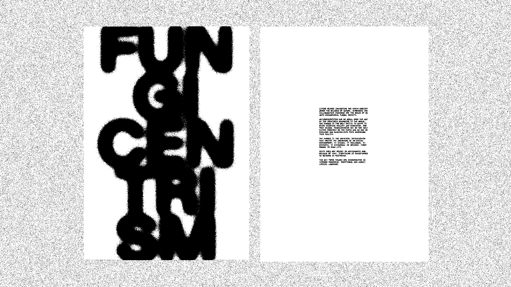
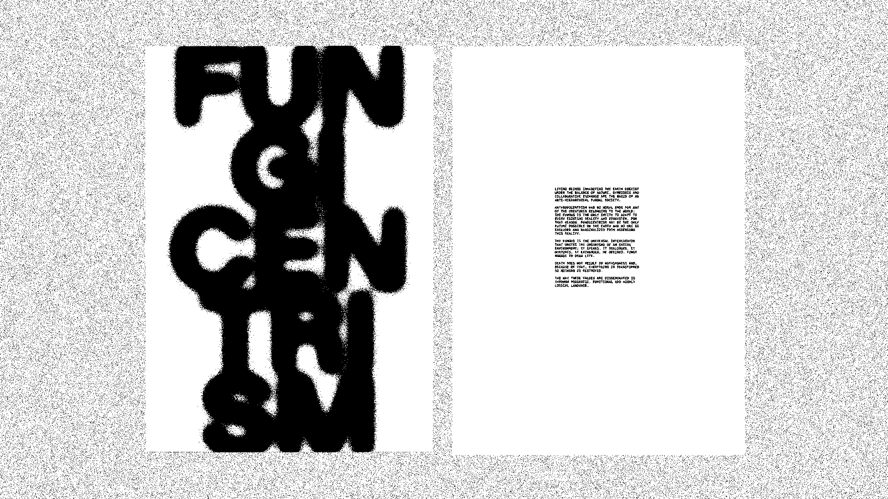

Wood Wide Web
Your connection point will be here
45°28′18.53″N 9°10′25.35″E
La società di massa è fortemente antropocentrica e disprezza qualsiasi altra creatura che non sia l’essere umano, al fine di perseguire il proprio sviluppo. L’ecosistema naturale globale è invece fungocentrico. Il Fungus è l’interlocutore universale che regola ogni aspetto della vita: dialoga, nutre, scambia e decide. L’essere umano deve necessariamente entrare a far parte di questa comunicazione, per instaurare un rapporto simbiotico con la natura e dirigersi verso una società fungocentrica senza gerarchie. Questo è l’unico futuro possibile, poiché il Fungus regola i rapporti secondo una logica pragmatica, utilizzando un linguaggio universale il cui unico scopo è garantire la sopravvivenza dell’intero ecosistema.
Mass society is strongly anthropocentric, and despises any creature other than human beings in order to pursue its own development. The global natural ecosystem, on the other hand, is fungicentric. The Fungus is the universal interlocutor that regulates every aspect of life: it dialogues, nurtures, exchanges and decides. Human beings must necessarily become part of this communication, to establish a symbiotic relationship with nature and move towards a Fungicentric society without hierarchies. This is the only possible future, as the Fungus regulates relationships according to a pragmatic logic, using a universal language whose sole purpose is to ensure the survival of the entire ecosystem.


 
